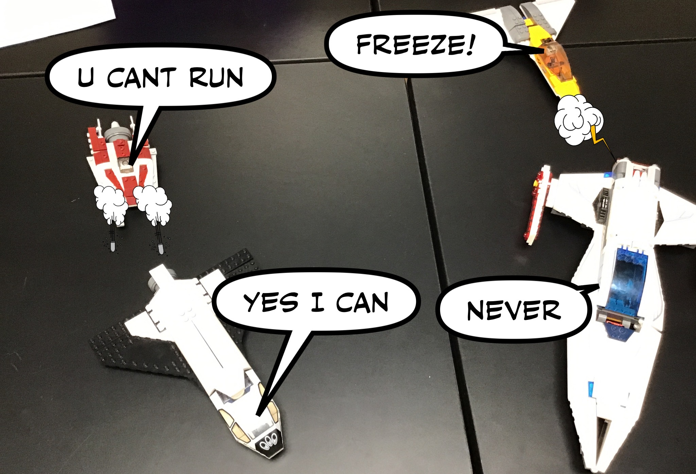
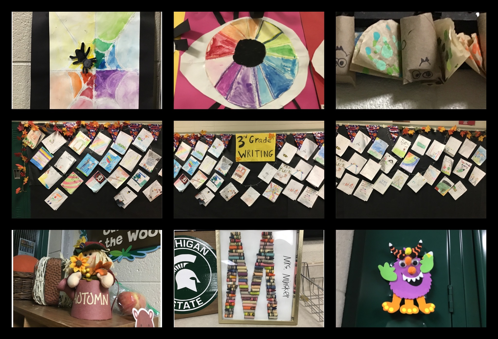
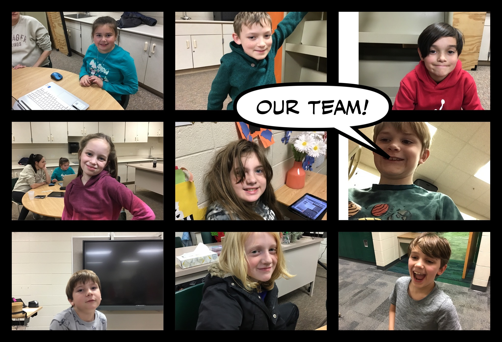

<ui:composition xmlns="http://www.w3.org/1999/xhtml"
	xmlns:f="http://java.sun.com/jsf/core"
	xmlns:h="http://java.sun.com/jsf/html"
	xmlns:p="http://primefaces.org/ui"
	xmlns:ui="http://java.sun.com/jsf/facelets"
	template="../WEB-INF/templates/master.xhtml">

	<ui:define name="content">

<style>
	.centered {
 	   text-align: center;
	}
	.fixed-size-img {
      	  width: 475px; 
     	  height: 430px;
	
    	}
	 .red {
        color: red;
    }
        img {
         display: block;
          margin-left: auto;
          margin-right: auto; 
	}
 .bold{
      font-weight: bold;
    }
	.img-1 {
      	  width: 500px; 
     	  height: 289px;
    	}
      .img2 {
      	  width: 500px; 
     	  height: 400px;
    	}
       .bing-fix {
     	  width: 700px; 
     	  height: 430px;
	
    	}
</style>

<h1 class="centered">
                           Comic Captions
</h1>

<p class="centered bold red" >
To view our video tutorial, go to this
 <a href="https://youtu.be/cLV655WtXX4" target="_blank">link</a>
</p>

To begin using the app,
take a picture of something, then 

press the three bars in the bottom left corner to get options to edit the screen.
<br/>
Hold the screen down and you will get a filter option and other options.
<br/>
Theres a save option in the three bars.
<br/>
<h3 class="centered">
Heres some of our ideas.
</h3>

<br/>
We are going to make a backround and put a ship infront of it.
<br/>
Then take a picture
<br/> 
Then add more jets attacking it above.

 <br/>


<br/>

 


<br/>
<br/>

For our next idea, we went around the school and took picures of peoples art and put in in a 3x3 layout.

 


 <br/>
<h3 class="centered">
Heres everyone on our robotics team  <br/>
</h3>
 


</ui:define>
</ui:composition>
